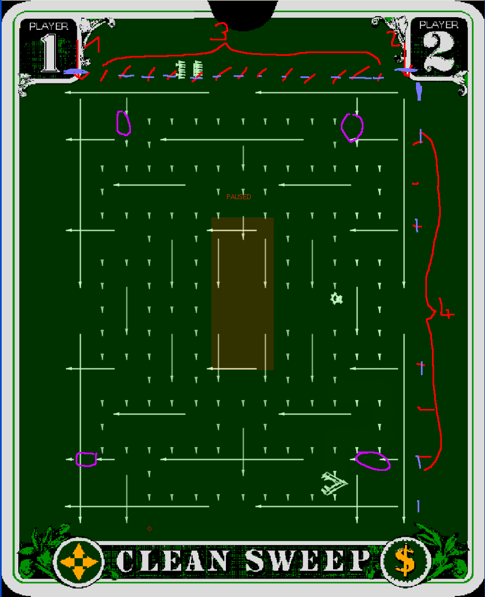

Sweep
Why do emulators hate Clean Sweep?
Because it brings vectrex to do something that we don't understand, which is not (yet) calculable.
Let me tell you how cleansweep draws its maze, look at the picture.
(Red colors)
First it draws the two vertical outer maze walls (top down)
Then it draws 13 "inner" vertical "stripes", these are generated to RAM locations, since they contain the eatable dots in the maze (top down)
Then it draws the 8 horizontal maze walls. Wall 7 (counting from top to bottom) is also a RAM vector, since it includes the shutable doors (pink)
Clean sweep uses an "own" drawing routine for the maze. All above vectors use this routine. For convenience let us call this routine: "DrawMazeVector"
So that we know that we talk about, let us assume the following is a correct disassembly of that routine.
; In $c8C9 length of vector Data
; in D position to move to
; resets to Zero after work
; In X Pointer to Vector Data (Shift Update data)
DrawMazeVector:
sta <VIA port A data IO reg ; DAC = a = y pos
clr <VIA port B data IO reg ; mux enable
lda #$CE ; disable zero (periphal control reigster, set lover nibble to $e, bit 0 doesnt matter)
sta <VIA control reg ; VIA Control register
clr <VIA shift reg ; clear shift register (blank line)
cmpx [d,x] ; wait (13 cycles)
inc <VIA port B data IO reg ; disable mux
cmpx [d,x] ; wait (13 cycles)
stb <VIA port A data IO reg ; DAC = b = x pos
tfr x,x ; wait (6 cycles)
clr <VIA timer 1 count reg hi ; Clear Timer 1H (start timer)[low = $80], this also enables RAMP
lda #$40 ; lade interrupt flag bit 6 (timer1)
0039:
bita <VIA interrupt flags reg ; interrupt flag time 1 gesetzt?
beq 0039 ; No, wait till it is set
jsr >Delay 1 ; Wait more (20 cycles), after timer finished, RAMP is disabled!
ldd >drawMazeVectorSpeedYX ; load next vector to draw
sta <VIA port A data IO reg ; put y value to DAC
lda #$80 ; keep RAMP off and enable mux
sta <VIA port B data IO reg ; to ORB
cmpx [d,x] ; wait (13 cycles)
lda #$81 ; keep RAMP off and disable mux
sta <VIA port B data IO reg ; to ORB
stb <VIA port A data IO reg ; put x value to DAC
ldb #$18 ; T1 in interrupt mode, SHIFT as usual, this means, contol of RAMP lies not within TIMER 1!
stb <VIA auxiliary control reg ; to auxiliary control
lda #$01 ; manually enable RAMP (mux disabled)
sta <VIA port B data IO reg ; [4]to orb
nop ; [2]delay 2 cycles
nop ; [2]delay 2 cycles
ldb >mazeVectorSize ; [5]load size y of maze (y-$13, x-$0f)
005E:
lda ,x+ ; [6]load maze byte
sta <VIA shift reg ; [4]put that in Shift reg to "configure "Blank"
nop ; [2]delay 2 cycles
nop ; [2]delay 2 cycles
decb ; [2]configure next byte load
bne 005E ; [3]if not done, go fetch next
ldb #$81 ; [2]manually disable RAMP (mux disabled)
stb <VIA port B data IO reg ; [4]to orb
ldb #$98 ; Restore OneShot mode of T1
stb <VIA auxiliary control reg ; to auxiliary control
Reset0Delay12:
jsr >Reset0Ref ; Go to zero
jsr >Delay 0 ; Delay 12 Cycles
rts
In short terms:
the routine first moves to a start point, the start point is always one of:
topmost position of the maze
leftmost position of the maze (seen from the maze point of view)
the positioning is done "old school" and very "moveto_d" alike. It uses some more delays, but thats fine
it than sets T1 to "interrupt" mode, which basically means, it disables the T1 control of ORB bit 7 (RAMP) and for its vector drawing it enables and disables RAMP "manually"
it gets from its input values the "length" of the vector and a pointer to a vector list
the vector list does not consist coordinates, its a number (= length of list) of shift register values
this means, the maze is more something like a really wide spread "raster" image
the raster image has a size of "$0f * $13" (x * y)
after each of these "rasterlines" is drawn the routine is finished and leaves with a Reset0
the raster is "blown" up, each shiftregister entry is an 8bit value, but the complete drawing of one shift register takes 19 cycles. That means the shift register is only used for the first 16 of these 19 cycles, and keeps "drawing" with the last bit of that shift reg value till it is "reloaded"!
So, where is the problem?
Part 1
The problem seems to be, that RAMP is not controlled by the timer, but manually!
When RAMP gets "activated" the shift register has a value of zero, nothing is drawn, but the integrators do already integrate. Befor the first shift-register value is used, the RAMP is already integrating for 19 cycles. (when you look at the picture, the pretty "blue" lines mark the starting point of the RAMP (well approximately).
Part 2
You have horizontal and vertical vectors and you want to start the maze at a "corner" not at a "crossing". Obviously while drawing vertical lines x-integration is 0 (zero) and y-integration is summing up, horizontal lines the opposite.
The developers now had an efficient drawing routine for an huge raster-image-maze-thingy, but with the problem, that after positioning correctly, the vectrex "beam" began to move befor drawing. At one time it began beforhand to move vertically, the other time it began to move horizontally. And they somehow hat to start those lines "somewhere" that the overhead would compensate itself.
The solution the developes came up with is two fold. Not only did they use an "overhead" for the starting position, they also used different scale factors for positioning!
* OUTER VERTICAL Maze is positioned with scale $80, speed $56
* INNER HORIZONTAL Maze is positioned with scale $78, speed $69
My guess is, they used trial and error on a vectrex and just happened to use values where those lines DO match. I wouldn't have a clue how they would have calculated the difference.
Still, why is that a problem? Why doesn't the emulators do that right?
Because, the analog hardware is just that - analog!
At least I do not have enough data to figure out how that analog hardware reacts in all different circumstances.
maybe, the RAMP signal is delayed when switched on?
maybe, the RAMP signal is delayed when switched off?
or both, or with different timing values?
maybe integrators need a timing parameter befor they can integrate again?
maybe such a timing is different for the degree (or sign) of voltage they receive? (the orginal disassembly of the the ROM suggests something like that (see MoveTo_D)?
maybe, the "drift" of the integrators is relevant?
maybe the drift of integrators gets greater the higher the absolut value they have already stored?
What is the solution?
Timing!
Defenitive it is a timing issue.
The only thing is WHAT to time HOW and WHEN.
I have been able to counter EVERY single faulty behavior I encountered in the emulator by "fiddling" with timing parameters. The only thing is I have not found the "one" that is a solution to all issues.
And I hate to check the CRC of a ROM and switch to the solution for that specific ROM, that seems pretty "lame".
The emulator and vectrex are in x-position exactly 873 vectrex pixels off!
(on the left side, on the right side double that value)
Vectrex pixel:
I define the maximum resolution of vectrex with 32767 in every direction. I am aware that the lines drawn by ranges above (about) 20000 are way out of bounds. But for easy "math" lets assume it is a 8 bit machine. Than a maximum scale of $ff and a maximum speed of -128 ($80) or +127 ($7f) gives us about the above vector ranges and a base to calculate with. (And yes - I am aware that scale can theoretically go up google... since it is time)
How do I arrive at that number?
Vertical vector X start:
The positioning of the left outer vertical wall gives us number one. It is positioned with a scale of $80 and a speed of $56, that multiplied gives us: 11008 (decimal)
Horizontal vector X start:
Here it gets tricky. Following steps are needed for calculation:
positioning of horizontal vector: scale of $78 speed $69: 12600 (decimal)
speed of x vector is $AB, which is in decimal -85
after the RAMP is switched on, exactly 19 cycles are used by the vector drawing routines, befor a value is written to the SHIFT register of VIA and shifting starts
the first value that is put into SHIFT register is $07 (binary: 0000 0111)
this means after 5 shift operations BLANK is the first time disabled
this means from start RAMP to first BLANK disabled 29 cycles have passed
-85 * 29 = -2465
this added to our starting position: 12600 - 2465= 10135
Thus the difference in our X-starting position is 11008 - 10135 = 873.
On the REAL vectrex this difference mysteriously is not existant due to analog "differences".